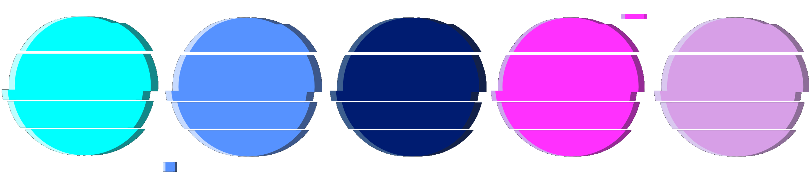

Logo
The name Q-Archive is a play on the term QR code and archive. The Q-Archive logo takes on a glitch style aesthic. This try of art is influenced by computer programming and and technology and gives the brand a futuristic vibe. Glitches are imperfections with technology, much the same way that many of the QR code stickers around the city are grafitti, which will eventually be removed.
Colour Pallet
The colour pallet for the website is inspired by glitch/Neo-Tokyo colours. These bright neon colours will be used against a dark, blue tinted background colour scheme.
Primary font
Source Code Pro is a Google font which can be found here. It was origianlly designed to use in code programs, because all of the glyphs have uniform widths. However, on the Q-ARCHIVE website it will help give a digital and futuristic feel to the website. It will be used for all of the headers on the website.
Secondary font
Lato is a Google font which can be found here. Compared to Source Code Pro, it is lighter and easier to read as a body font on a website, while still keeping the same visual style of the primary font. Both of the fonts I have chosen are sans serif fonts as to increase legibility online.